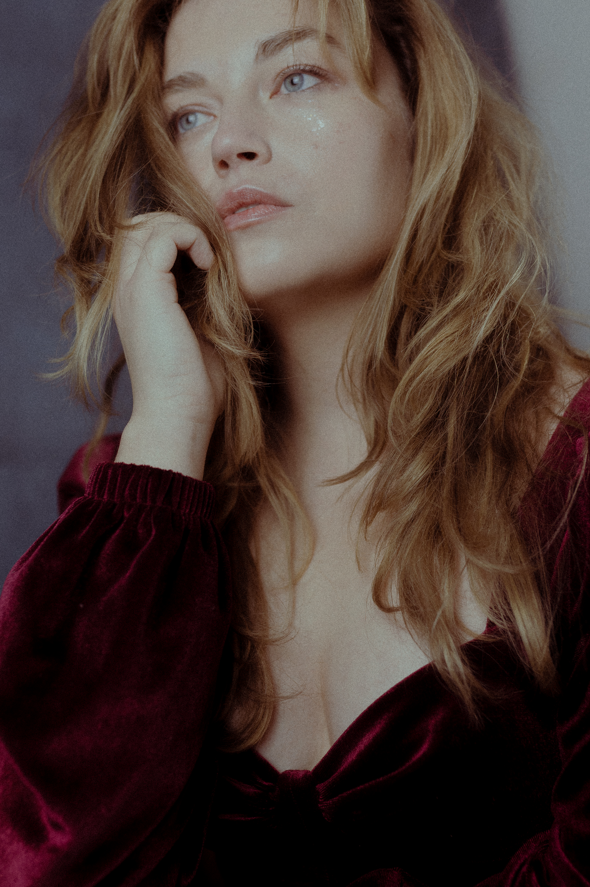
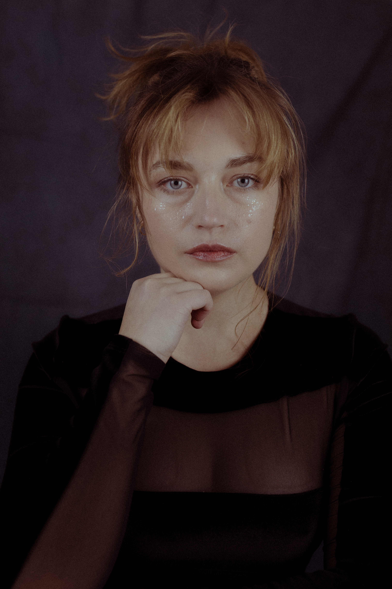
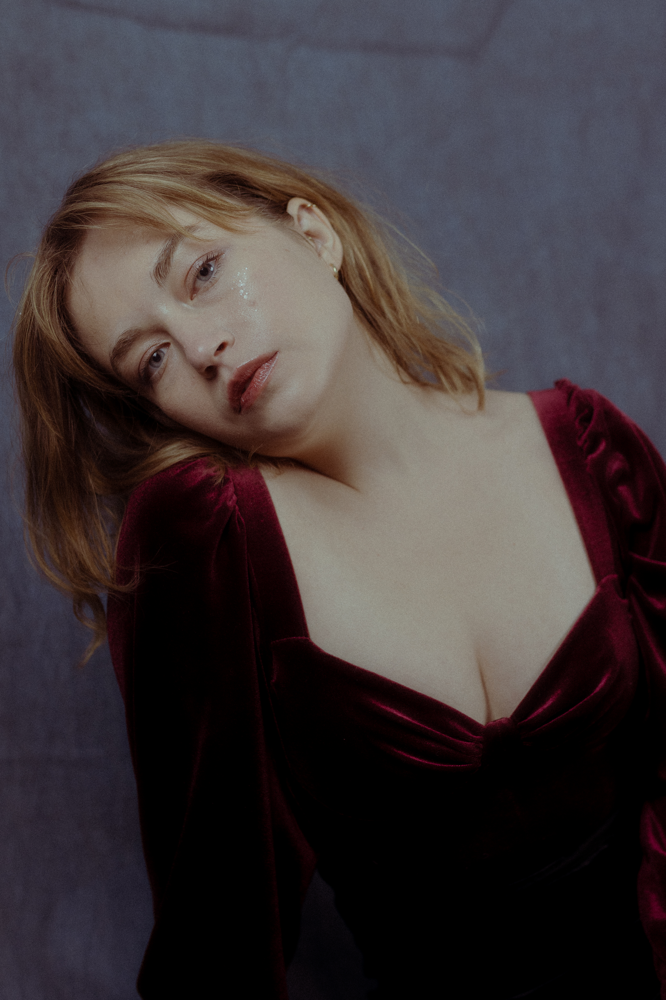

O mnie
01Aktorka mieszkająca w Warszawie, otwarta na projekty filmowe, telewizyjne, reklamowe i artystyczne.
Nazywam się Ada Świderska. Mam 29 lat i mieszkam w Warszawie. Jestem zainteresowana udziałem w produkcjach filmowych, telewizyjnych, reklamowych oraz innych projektach kreatywnych.
Na stronie znajdują się moje aktualne zdjęcia, materiały aktorskie oraz dane kontaktowe.
LokalizacjaWarszawa
Wiek29 lat
JęzykiPolski, angielski
DostępnośćPolska i zagranica
Portfolio
02


Showreel
03▶
Showreel będzie dostępny wkrótce.
Porozmawiajmy o współpracy
Zapraszam do kontaktu w sprawie castingów, produkcji filmowych, reklamowych i projektów artystycznych.
twojemail@example.com